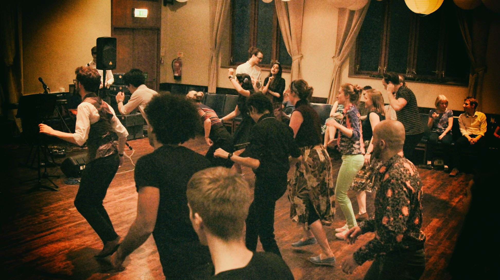

Swing is a upbeat to very high paced dance with clear origins dating back to the 1920. It encoumpasses multiple styles. The same piece of music might be danced in structures of 6 or 8 beats. It's generally considered to be a very playful and often energetic dance.
